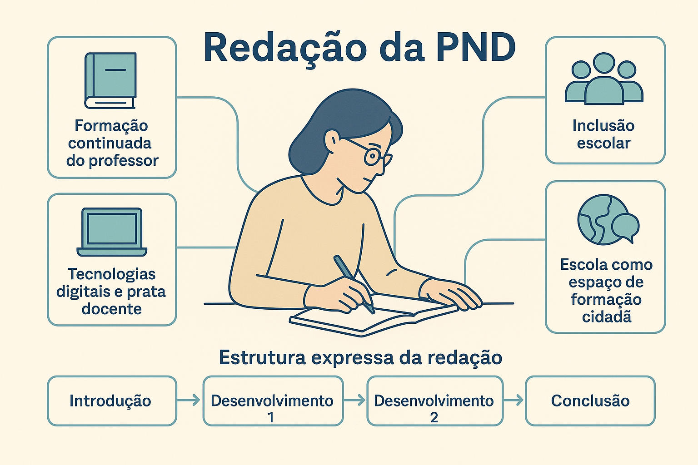

Prova Nacional Docente (PND) 2026: apostas de temas e estrutura expressa de redação
A Prova Nacional Docente (PND) consolidou-se como o principal instrumento de avaliação para ingresso e certificação de profissionais da educação básica. Entre as competências exigidas, a redação dissertativo-argumentativa atua como o coração da prova: é nela que o candidato demonstra não apenas domínio da norma-padrão, mas sua capacidade de articulação entre a teoria pedagógica e os dilemas reais do cotidiano escolar.

Para alcançar a nota máxima, é insuficiente recorrer a clichês sobre "a importância da educação". A banca avaliadora da PND de 2026 busca professores com letramento crítico, capazes de diagnosticar problemas complexos (como a plataformização do ensino, a defasagem pós-pandêmica e a diversidade em sala de aula) e propor soluções pautadas em diretrizes oficiais (BNCC, LDB e PNE).
Abaixo, elencamos 5 eixos temáticos de alta probabilidade para 2026, além de um modelo de estrutura expressa e dicas de repertório para blindar sua argumentação.
O que a banca da PND realmente avalia?
Diferente do ENEM, a redação da PND exige um ethos profissional. O corretor espera ler o texto de um educador-pesquisador. Isso significa usar vocabulário técnico (ex: transposição didática, gestão democrática, metodologias ativas) e demonstrar conhecimento da legislação educacional vigente.
5 Temas Quentes para a Redação da PND em 2026
1. Inteligência Artificial e letramento algorítmico na prática docente
Com a onipresença de ferramentas de IA generativa no cotidiano dos estudantes, o debate ultrapassou a simples "proibição". O desafio do professor em 2026 é promover o letramento algorítmico e midiático, ensinando o aluno a questionar fontes, identificar vieses em algoritmos e utilizar as tecnologias digitais de forma ética e autoral, sem perder o protagonismo da mediação humana.
2. Educação Antirracista e a urgência de uma pedagogia decolonial
A superação do racismo estrutural no ambiente escolar exige mais do que projetos pontuais em novembro. A redação pode cobrar como o professor efetiva as leis 10.639/03 e 11.645/08 no currículo diário, promovendo o respeito à diversidade e construindo práticas pedagógicas que desconstruam estereótipos, valorizando as matrizes africanas e indígenas na formação da identidade nacional.
3. Neurodiversidade e o Desenho Universal para a Aprendizagem (DUA)
A inclusão escolar contemporânea não se limita a garantir a matrícula. O tema pode focar na adaptação curricular para alunos com Transtorno do Espectro Autista (TEA), TDAH e outras neurodivergências. A aposta argumentativa aqui é o Desenho Universal para a Aprendizagem (DUA), uma abordagem que flexibiliza as formas de ensino para engajar múltiplos perfis de alunos na mesma sala de aula.
4. Saúde mental, esgotamento docente e a atratividade da carreira
A qualidade da educação está umbilicalmente ligada às condições de trabalho do magistério. Um tema denso e provável aborda a síndrome de burnout entre professores, o impacto da violência escolar e a necessidade de políticas públicas robustas de valorização profissional (piso salarial, plano de carreira e apoio psicológico) para frear o apagão docente no Brasil.
5. A escola frente à emergência climática e à desinformação
Em um cenário de crises ambientais severas e hiperconectividade, a escola reafirma sua função social como espaço de ciência e cidadania. O tema pode exigir uma reflexão sobre como a educação socioambiental e o pensamento científico são ferramentas essenciais do professor para combater o negacionismo, as fake news e formar cidadãos preparados para os desafios climáticos do século XXI.
Repertório Coringa: conceitos para enriquecer seu texto
| Conceito / Autor | Aplicação Prática na Redação (Argumento) |
|---|---|
| Educação Bancária vs. Libertadora (Paulo Freire) | Ideal para criticar o ensino mecânico e defender metodologias ativas, protagonismo juvenil e o letramento crítico. |
| Modernidade Líquida (Zygmunt Bauman) | Útil para temas sobre o impacto das redes sociais, IA, ansiedade dos alunos e a fragilidade dos vínculos no ambiente escolar. |
| Gestão Democrática (CF/88 e LDB) | Argumento central para temas sobre violência escolar, evasão, projeto político-pedagógico (PPP) e relação família-escola. |
| Transposição Didática (Yves Chevallard) | Excelente para demonstrar como o professor transforma o "saber sábio" (acadêmico) em "saber ensinado" (acessível ao aluno). |
Armadilhas a evitar na PND
1. O "Salvacionismo": Evite concluir que o professor, sozinho e por amor, vai resolver todos os problemas do Brasil. Aja com realismo: exija políticas públicas e responsabilidade do Estado.
2. Senso Comum: Termos como "no mundo em que vivemos" ou "desde os primórdios" empobrecem o texto. Prefira marcos temporais precisos ("No contexto da cibercultura..." ou "A partir da promulgação da LDB em 1996...").
Estrutura Expressa: o "Esqueleto" da Redação Docente
Caso o nervosismo apareça ou o tempo esteja curto, utilize este esqueleto sintático. Ele garante a presença de conectivos lógicos e uma progressão argumentativa (introdução, causas/consequências e intervenção pedagógica).
Modelo de Roteiro Sintático
-
Introdução (Contextualização + Tese):
No atual cenário educacional brasileiro, atravessado pelas rápidas transformações (citar a área do tema: tecnológicas / sociais / inclusivas), o debate acerca de (inserir o tema) ganha contornos de urgência. Sob essa ótica, é imperativo analisar não apenas (Argumento 1 - causa ou obstáculo), mas também (Argumento 2 - impacto no ensino-aprendizagem), a fim de resguardar o direito constitucional à educação de qualidade. -
Desenvolvimento 1 (Foco na raiz do problema ou desafio pedagógico):
Em primeiro lugar, destaca-se que (desenvolver o Argumento 1). Essa realidade encontra respaldo no pensamento de (citar um teórico, ex: Paulo Freire, ou uma lei, ex: LDB), que preconiza (explicar brevemente o conceito). Contudo, a prática cotidiana revela que (mostrar a falha ou o desafio na realidade escolar). Tal assimetria compromete a formação integral do educando e fragiliza a prática docente. -
Desenvolvimento 2 (Foco nas consequências ou desdobramentos):
Ademais, convém ressaltar que (desenvolver o Argumento 2). No contexto de uma sociedade (característica da sociedade, ex: hiperconectada / desigual), o espaço escolar frequentemente reproduz (consequência negativa do problema). Prova disso é (dar um exemplo prático ou citar dados educacionais). Logo, sem uma postura crítica e formativa, a escola corre o risco de perpetuar processos de exclusão e alienação. -
Conclusão (Proposta de Intervenção Pedagógica/Institucional):
Depreende-se, portanto, a necessidade de medidas concretas para mitigar os entraves relativos a (inserir tema). Para tanto, cabe ao Estado, em articulação com as Secretarias de Educação, promover (Ação institucional, ex: formação continuada efetiva / infraestrutura adequada), por meio de (Modo/Meio de execução). Paralelamente, urge que a gestão escolar, respaldada em seu Projeto Político-Pedagógico, fomente (Ação pedagógica na escola). Assim, consolidar-se-á uma educação verdadeiramente emancipatória e democrática.
Perguntas frequentes sobre a Redação da PND
Posso citar minha experiência pessoal em sala de aula?
Não em primeira pessoa. A redação dissertativo-argumentativa exige distanciamento e impessoalidade. Em vez de escrever "Vejo na minha escola que os alunos...", prefira "Nota-se, no ambiente escolar contemporâneo, que os discentes...". Transforme sua vivência empírica em argumento sociológico ou pedagógico.
A proposta de intervenção precisa ser tão detalhada quanto a do ENEM?
Sim e não. A PND exige soluções concretas, mas com um viés muito mais focado na gestão escolar, nas políticas educacionais (Secretarias/MEC) e na prática pedagógica do que o modelo engessado do ENEM. Foque na viabilidade da sua proposta dentro do que estabelece a LDB e a BNCC.
Como demonstrar conhecimento atualizado se eu estiver nervoso na hora?
Apoie-se nos textos motivadores (sem copiá-los). Eles sempre trazem dados ou leis recentes. Além disso, ter em mente os eixos da BNCC (competências gerais) e marcos da educação inclusiva (como o Estatuto da Pessoa com Deficiência) serve como coringa para quase qualquer tema.
Resumo Estratégico
- Foco de 2026: IA e letramento algorítmico, educação antirracista, neurodiversidade, saúde docente e emergência climática são os temas mais cotados.
- Perfil Exigido: O texto deve refletir a postura de um professor-pesquisador, crítico, pautado na ciência da educação e na legislação.
- Repertório: Utilize conceitos da pedagogia (Paulo Freire, gestão democrática, transposição didática) no lugar de citações filosóficas genéricas.
- Estrutura: Mantenha a impessoalidade e use a proposta de intervenção para demonstrar seu conhecimento sobre o funcionamento prático e político do sistema educacional brasileiro.